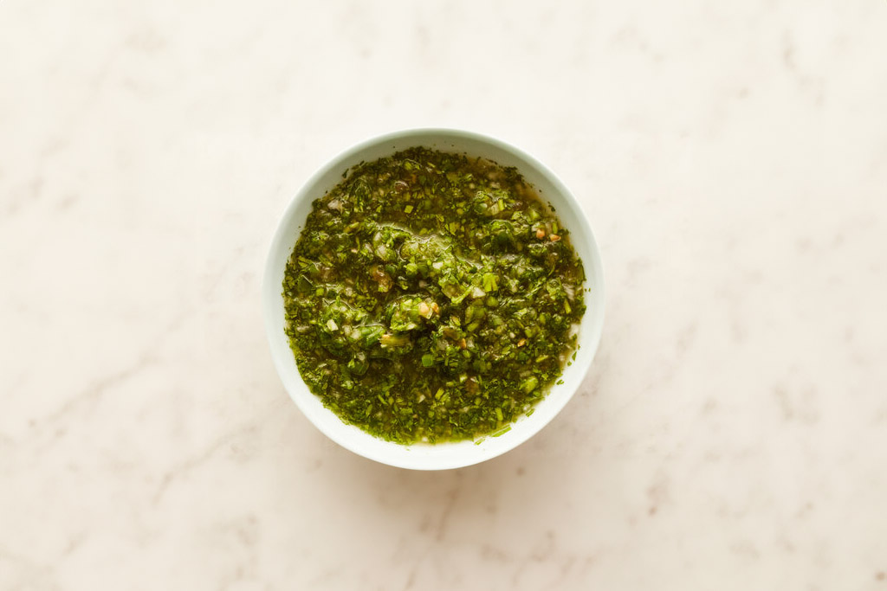

S
Ají (Colombian-Style Fresh Salsa)
Colombian food is typically not spicy on its own. Instead, a hot sauce called ají — also the Colombian word for chiles — is served tableside. There are as many types of ají as there are regions in Colombia, but this version, heavy on cilantro and onions, is a good all-purpose sauce that goes especially well with fried foods.